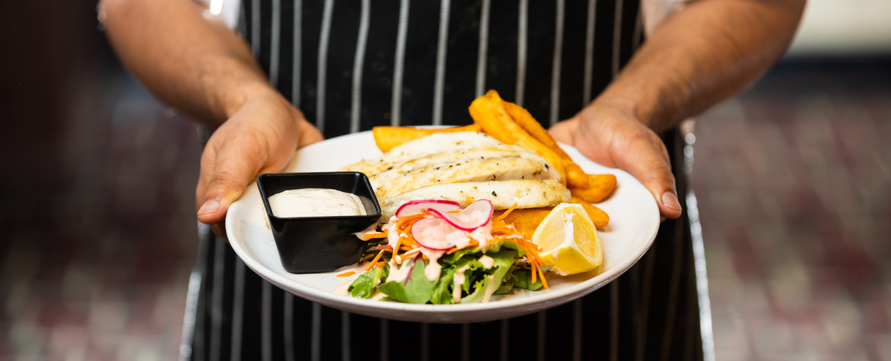

Tips for VCE Food Studies
Image: Chef holding a meal.
-
Chapter questions
In most food studies classes you will have to complete the 20 - 30 questions in your textbook at home per week. These chapters have all the information you need to succeed in this subject so put effort into them. They are also a great way to review your knowledge before SACS/exams by having the information in the chapters summarised in your answers. -
Reviewing
Reading is one of the best ways to study this subject as it helps you understand a connected story that links to your memory. So read the textbook, read your notes, and read the teacher's lesson plans. However, if you do not like reading you can transfer the text into a Google document and listen to it. -
Practice questions
Practice questions are one of the best ways to study for Food Studies because it is a lot of application knowledge that you can’t learn without practising questions. Most teachers will provide you with practice questions before a SAC/exam which helps you to identify what the test will most likely be covering. -
Study Design
One of the most important things you can do in any subject you are studying is to look through the study design. They are literally giving you the main knowledge you will need to succeed in the subject as well as how you will be assessed.